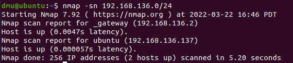

Nmap
Here is the URL to the offical Nmap page: https://nmap.org/
Pre knowledge:
as a rule of thumb, its best to know common ports used beforehand.
For example, knowing SSH = port 22, DNS = 53, HTTP/s = 80/443.
This is because some services are bound to certain ports, and as such
if you recognise an open port, you may recognise what service its related to.
I also recommend using Nmap on Kali, it comes preinstalled.
Some commands struggled to work in Ubuntu, so I had to do some fixing
Table of contents
1. General Info + Tool Purpose
To Contents Table
Nmap is a very popular scanning tool used in the penetration testing world.
Its most common usage is to scan a target to find exposed ports from a targeted machine.
When scanning the machine it will also provide additional information about the exposed port on the target,
such as what service it is running.
When scanning for ports there are three types that can be found:
- Open
- A service is listening on that port and is waiting to make a connection
- Closed
- There is a firewall or filter blocking the port resulting in Nmap not knowing if the port is open or not
- Filtered
- The port has no service listening
Importance of scanning tools:
Information is gold. Just by knowing what service is being used and its version you can
start get an idea of what exploit/vulnerability to look for. By knowing the version number you can start looking for an
appropriate exploit that works against that version.
For example, if I found out my target was a windows OS then I would start to look for windows exploits.
If I found the specific version (like a Windows server 2012 R2) then I would look for an appropriate exploit for that target
(note, what exploit would I use? hint: its quite blue).
2. How to use the tool:
To Contents Table
The tool can be used by entering ‘nmap’ into the command line. In order to use certain arguments (such as –A)
the command may need to be run with root privileges (due to permissions required by Nmap).
This can be done by either changing to root user beforehand
(type su, press enter, type root into password) or adding sudo to the start of the command (sudo nmap).
nmap | sudo nmap
The tool can be run with only one argument, the IP address, however it would not give a lot of information.
For example ‘nmap localhost’ (NB localhost refers to 127.0.0.1) would work.
Try using the Nmap scan against localhost and identify the opened ports.
Click the button below to see what I got.
nmap localhost
Have a go yourself!
On the Penting machine, from scanning localhost four open ports can be found, with the most vital
find being port 80 and 3306. From this scan we have found out the VM we are running it has a webserver and
MySQL server.
These are targets commonly found when investigating a vulnerable machine hosting a server.
3. Arguments:
To Contents TableWarning: some arguments need to be run as root user or sudo to work! This is because in order to make use of the raw network sockets, listening and sending packets (which can provide more scan information), root privilege is required. Without this privilege, Nmap will not run the argument and instead error out.
With no arguments, Nmap does the bare minimum – it does a TCP SYN scan (-sS) (also known as a stealth scan as doesn’t complete the TCP connection) and looks for open ports among the common ports (1000 common ports) and returns the service names (and not the software name or version).
In the Nmap command we ran previously we did not get a lot of info about the services itself – for example we know port 80 has a webserver, but what service version? And also, what if I want to scan the target through a different way instead of the default syn scan (-sS)? You may have also noticed, including the open ports found we only scanned 1000 ports. These can be solved by adding an argument.
3.1 Host Discovery:
To Contents TableNmap can also be used for host discovery as well as port scanning. Truth be told, I don’t used Nmap for host discovery, I use fping, however I have included it in case you are curious.
-sn (different to -sN) – the –sn argument is used to find hosts on a subnet (network inside of a network).
Using –sn makes
it so the port scan feature is disabled, and hosts are only pinged to see if they are active. When scanning for
hosts it is important to confine to subnetting rules regarding the IP address.
For example, if the IP address
is 192.168.100.100 you would need to enter ‘nmap –sn 192.168.100.0/24’. I’m not very good at teaching subnets
so I recommend looking elsewhere for it! Below is an example of me using it against Pentings IP:
nmap -sn IP/24
From the host discovery scan it managed to find two hosts/IP addresses that are active.
3.2 Showing More Target Information:
To Contents Table-sV – this argument can be added to the command to receive the version info of any services found. This is what it looks like when it is used alongside the previously used command.
nmap -sV localhost
With –sV we now know the webserver is an Apache server, and that its version is 2.4.41!
-O - Similar to –sV, -O finds the version of the Operating system running the virtual machine. –sV can also find the OS however it does not present all possible guesses, just the most likely. From scanning the VM I found my Linux version.
nmap -O localhost
-sC - another argument is the –sC argument, this arguments runs a set of default scripts against the target. Unlike the previous arguments, this argument is considered to be more intrusive due to the scripts being used and as such shouldn’t be used against unauthorized targets, using it against the targets mentioned in this machine is fine though. This is what it looks like when it is used alongside the previously used command.
nmap -sC localhost
Compared to the other scans it gave a lot more information – however you may notice on the apache service it didn’t state its version, unlike -sV
-A - This argument is all of the three previous arguments rolled into one (and another one called traceroute – traces path to host). Usually when I’m scanning I use this argument. Here is an example with the Ubuntu VM.
nmap -A localhost
I have broken down the screenshots into its respective arguments. I have missed out some sections to make it easier to understand:
-sV
-O
-sC
I also tried -A on my personal Kali machine against a website. Instead of scanning localhost, I scanned the nmap scanning website .scanme.nmap.org (can be found at the bottom of the nmap help page). I have also split it up as best as I can. I have left out traceroute.
-sV
-O
-sC
Overall, I recommended trying out the –A argument on machines found on HackTheBox as it is safe to do so and every box gives a
different output.
After finding out the services and its version numbers look it up online on google and look for
vulnerabilities (e.g. apache version xyz exploit). ExploitDB is as good source of exploits.
3.3 Ports:
To Contents Table
By default, nmap only scans the 1000 common ports, this is to save time. If you wish to pick your own
port, you can use the –p argument. The most common use of the –p argument is to scan all ports, which is –p-.
NB first 1023 ports = well known ports. 1024 – 49151= registered ports. 49152 – 65535 = dynamic/private ports
-p- - The –p- argument selects ALL ports to scan. This is a scan range of 1 – 65535. This is what the command looks like when used on Penting.
nmap -p- localhost
Because of the port range being extended a new service can be found on 33060. This is because previously nmap did not take this port into consideration when scanning (as it was not in the 1000 common ports).
-px - Other uses of the –p argument is to scan a specific port, or a range of ports, such as -p123. Here is an example of looking for a single port and a range of ports.
nmap -p80 localhost
It can also be combined with commas, like so.
nmap -p80,600-4000 localhostReasons for using specific port numbers:
- First a user may do a lite scan looking for all open ports on the target machine
- As this scan is only looking for open ports it is very quick
- For example, nmap –p- localhost
- When all the ports are found, a second scan is done.
- This time however, only the open ports found are scanned, and this time an additional argument is also used, -A, to get all port information. As it only checks 6 ports its much quicker
- For example, nmap –p80,631,3306 –A localhost
3.4 Scanning types:
To Contents TableNmap also allows the use of different types of scans. The most popular being TCP SYN (-sS), then TCP connect (-sT). There is also a UDP scan (-sU) and TCP NULL, FIN and XMAS (-sN, -sF, -sX). There are more but I will only be covering these, the most popular ones. NB: sudo needed to run these arguments
-sS - TCP SYN – this is the default scan and considered the go to scan. All of the scans I have done with no stated scan argument have been done as a TCP SYN scan (is the default). It is considered fast and stealthy. Here is an example with the argument stated, doesn't looked much different.
sudo nmap -sS localhost
-sT - TCP connect – simply put, it is considered the inferior version of TCP SYN. This is because it gets the same
information as TCP SYN, except it does it less efficiently – it takes longer to do as it makes a connection with the target,
and because of this is more likely to be logged by the target (TCP SYN does not make a full connection).
Here is an example of me using –sT. Not much of a difference can be seen, better to stick with TCP SYN/-sS
if possible.
sudo nmap -sT localhost
-sU - UDP – possibly one of the more important alternative scans. As well as TCP ports, there are also UDP
ports – these ports are not scanned with the TCP scans/by default so need to manually scan for UDP ports.
The main
issue with UDP ports however, is when it comes to scanning UDP takes significantly longer to scan (due to how much longer the requests take)).
Because of this
many people only scan the 1000 common ports with UDP. See example below for UDP.
sudo nmap -sU localhost
Take note of how long the scan took and compare it to the TCP SYN scan. Yes, it's only 1.2 seconds longer, however
most of the scans I’ve done so far have been under 0.1 seconds. Additionally, imagine the scan on a larger scale.
Being 30mins+ is considered the norm for UDP.
Regardless, doing the UDP scan revealed two new ports that were not
revealed in the –sS scan (even when I used the –p- argument to scan all ports, it didn’t show up). This is
because these are UDP ports, and so doesn’t get scanned by TCP. As such, as obvious as this may sound,
it is important to scan the target for any UDP ports.
XMAS, NULL and FIN – these scans are all quite similar. They all consist of exploiting the TCP RFC and
messing with the packet, basically changing the flag bits to cause mayhem and being able to identify open
and closed ports. Here is an extract from the Nmap website:
"Page 65 of RFC 793 says that “if the [destination] port state is CLOSED .... an incoming segment not containing
a RST causes a RST to be sent in response.” Then the next page discusses packets sent to open ports without the
SYN, RST, or ACK bits set, stating that: “you are unlikely to get here, but if you do, drop the segment, and return.”"
In other words – if a RFC compliant system gets a SYN, RST or ACK bit, the system will return a
RST if the port is closed, otherwise there is no response.
-sN - NULL scan – in the TCP flag header, no bits are set
sudo nmap -sN localhost-sF - FIN scan – only sets the TCP FIN bit
sudo nmap -sF localhost
-sX - XMAS scan – the FIN, PSH and URG flags are set, the packet is lit up like a Christmas tree
sudo nmap -sX localhostAs the scan can’t tell if it’s open or filtered it states both
3.5 Scan Timings:
To Contents TableWith the –T argument the speed of the scan can also be influenced
-T - by default the speed of the scan is set at 3. The range of the speed can be between 0-5.
If you wish to speed up the time of the scan the –T argument can be set to a higher number.
Normally increasing the
speed may alert the firewall, so it may be best to keep it as normal (unless you are in a rush/being caught is not an issue).
Here is an example of setting the speed at max.
nmap -T5 localhost
3.6 Outputting Scan Result:
To Contents TableThe scan result can also be stored in a text file as soon as the scan is complete. Saving the scan into a file is a good idea as you wouldn’t need to do the scan again if you forgot to take a picture, especially if it was a long scan. There are a range of file format, I will only go over the normal format (you can see the other options in the help page, seen below).
-oN - this outputs the file into the normal format. Make sure to select a file name after the argument. Here is an example of its usage (added the –p argument to add flavor).
nmap -p1-1000 localhost -oN scan1.txt
And this is what it looks like in the file:
Alternatively you can also use the Linux append feature to add the scan result to a file after it is completed. Instead of –oN filename just do > filename. Here is an example with '>':
nmap -p1-1000 localhost > scan2.txt
The main difference is that the –oN version adds the exact command entered to the file.
In my opinion, either way works. I use –oN for more complex commands just in case I forget what I enter,
however the append method (>) works for other commands outside of just nmap (for example cat file > file2 would work).
Either way, I mix and match.
3.7 Misc. arguments:
To Contents Table-v - Verbosity – using the –v argument (or –vv) it will make is so whilst the scan is running it will print out information it finds. For example, if the scan finds an open port on port 80 from localhost it will output to the terminal saying it has done so as it found it. Below shows an screenshot of the –v argument being used.
nmap -v localhost
As you can see it lists the ports found as it scans localhost. It also presents the report as usual at the end. Usually I don’t use the –v argument (as its makes it messy for my eyes) however if you’re doing a long scan, like UDP, and you don’t have time to wait for the final report and you wish to action upon the found ports ASAP then using verbosity may be a good choice.
-iL - entering IP address(s) through a file – using the –iL argument, a file can be used to enter a list of IP addresses. Below is a text file I made containing two IP addresses (technically one) and then using it in Nmap:
nmap -v localhost
Overall, the –iL argument is very good if you need to scan a list of IP addresses. In a work environment you may
make a file containing a list of targets (found from searching the web) you need to scan against, or possibly an
employer may send you a file that contain a list of machines they wish for you to attack.
As a whole I do not use
–iL a lot because for HackTheBox machines you only need to focus on a single IP address.
4. Nmap examples:
To Contents TableHere are examples of the Nmap command This command is to scan a target for all possible information, scanning for all ports at max speed and saving the results to a text file:
sudo nmap -p- -A -sS -T5 localhost -oN scan.txt The -sS argument can be replaced with a different argument in order to change the type of scan. For example, if I wanted to do a UDP scan I would turn -sS to -sU (and due to timing contraints I would also only scan for the first 1000 ports as UDP takes a while):
sudo nmap -p1-1000 -A -sU -T5 localhost -oN scanUDP.txt Here is an example of the Nmap command, used to discover other hosts on a network, remember, the 0/24 is needed to specify scanning the network for hosts:
sudo nmap -sn IP.IP.IP.0/24 5. Help Page:
To Contents TableBy running just the command ‘nmap’ or with the –h argument (‘nmap –h’) the help menu can open up. There is also a man page for nmap, accessible via the VM.
nmap | nmap -h